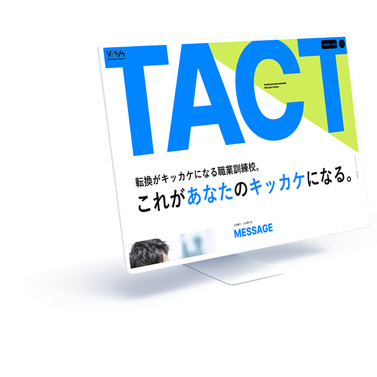

WORKS-04
04
WSS（ウェブスタディサッポロ）
WSS（ウェブスタディサッポロ）
コーポレートサイト
- 担当範囲
- デザイン（トップページ、aboutページ、symposiumページ）
コーディング（interviewページ） - 使用言語・ソフト
- HTML(LS)、CSS3、JavaScript、figma、Photoshop
- 対応機種
- パソコン
- 制作期間
- 企画・デザイン二週間、コーディング一週間

「男性の受講者も増やしたい」というクライアントの希望に応えるため、男女どちらにも好まれるデザインでありつつやや男性向けを意識しました。具体的には、太めのゴシックフォントを使用する、写真に登場する人物を男女同じくらいの比率にする、などです。
- サイト概要
- 職業訓練校のウェブサイトリニューアル
- クライアント・依頼内容（想定）
- Web業界への就職を目指す職業訓練校。
現行のサイトが6年前に作ったもので、設計も複雑でわかりにくいと感じている。また、コンテンツ内容も最新のカリキュラムに即したものに更新したい。
目的は応募者を増やすこと。現状として女性の受講者の比率が非常に高いため、男性にももっと来てほしいと思っている。 - ターゲット層
- 20～30代の男女
- サイトデザインの方向性
- 入学を検討しているサイト閲覧者が入校前に抱く疑問（＝不安）を解消できるよう、必要な情報を一通り備えたウェブサイトとする。
- 制作意図・工夫した点
- グループ課題として制作したサイトです。グループメンバー内で「自分たちが入校する前に、WSSのサイトにどういう情報があって欲しかったか」というサイト閲覧者視点の意見を出し合った結果、「様々な不安を、サイトから得られる情報で解消したかった」という傾向が見えてきました。
そこでサイトコンセプトを「入校前の不安を解消できるウェブサイト」と定め、デザイン面では不安を打破するような力強さ、頼もしさを表現することが大事だと考え、太目のしっかりしたフォント、はっきりとした色合いを使用しました。
また、新規コンテンツとして一問一答形式のQ&A、実際のカリキュラムに即した形での在校生のエピソードストーリー、在校生と講師の座談会などを追加し、閲覧者が情報を得て安心を得られるような、コンセプトに即したサイト作りを心掛けました。
自分たちで決めたコンセプトに沿ったサイト設計、作業の分担と最終的なデータ統合作業など、学ぶものの多かったサイトです。